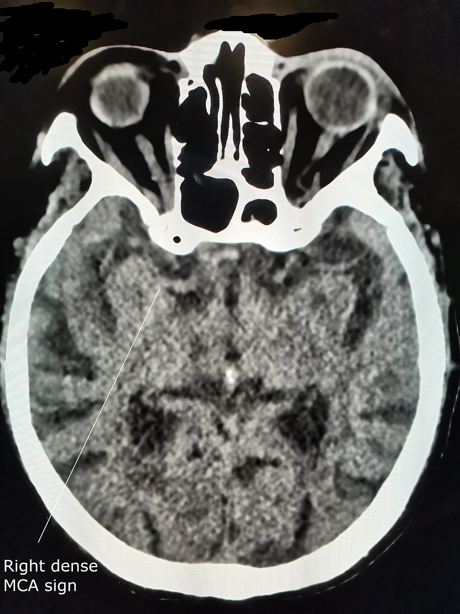

Ficha del catálogo
Signos precoces de infarto en tomografía simple
- Sistema
- Nervioso
- Modalidad
- TC
- Región
- Encéfalo, territorio de la arteria cerebral media
- Dificultad
- Intermedio
En las primeras horas del ictus isquémico la tomografía simple puede parecer normal, pero existen signos sutiles que anuncian el infarto establecido y ayudan a decidir el tratamiento de reperfusión. Reconocerlos exige una lectura sistemática con ventana estrecha y comparación permanente con el hemisferio contralateral.
Técnica
Tomografía de cráneo sin contraste con cortes finos y reconstrucción de partes blandas, revisada con ventana estrecha para aumentar el contraste entre sustancia gris y blanca. Se complementa con angiotomografía de troncos supraaórticos y de las arterias intracraneales para localizar la oclusión.
Qué observar
- Hiperdensidad espontánea de un vaso arterial, sobre todo del segmento proximal de la arteria cerebral media
- Pérdida de la diferenciación entre sustancia gris y sustancia blanca
- Borramiento del núcleo lenticular con desaparición de su contorno
- Pérdida de la cinta insular por hipodensidad de la corteza
- Borramiento de los surcos corticales por edema citotóxico incipiente
- Extensión del territorio afectado y comparación punto por punto con el lado sano
Hallazgos
En las primeras horas se observa hipodensidad tenue de los ganglios basales o de la corteza insular, con pérdida del límite entre sustancia gris y blanca y borramiento de surcos, sin efecto de masa significativo. La arteria ocluida puede verse espontáneamente hiperdensa por el trombo intraluminal. Con el paso de las horas la hipodensidad se hace más evidente, adopta forma de cuña con base cortical y respeta los límites del territorio vascular.
Perlas
La ventana estrecha convierte un estudio aparentemente normal en un estudio diagnóstico, porque amplifica diferencias de densidad que pasan inadvertidas con la ventana habitual. La hiperdensidad arterial debe ser asimétrica y seguir el trayecto del vaso, ya que un hematocrito elevado o la calcificación de la pared la simulan de forma bilateral.
Diagnóstico diferencial
- Estado posictal o crisis prolongada
- Los cambios no respetan un territorio vascular, suelen ser corticales difusos y revierten en el control evolutivo.
- Encefalitis en fase inicial
- Afectación cortical y subcortical de distribución no vascular, con predominio temporal e insular y contexto febril.
- Tumor infiltrante con edema
- La hipodensidad respeta la corteza, predomina en sustancia blanca y produce efecto de masa desproporcionado para el tiempo de evolución.
- Infarto antiguo
- La hipodensidad es marcada, de densidad similar a la del líquido cefalorraquídeo, con pérdida de volumen y dilatación del ventrículo vecino.
Simuladores
- Artefactos de endurecimiento del haz en la fosa posterior y junto a la calota
- Asimetría aparente de densidad por posicionamiento inclinado de la cabeza
- Hiperdensidad arterial bilateral por poliglobulia o por calcificación parietal
Por modalidad
- TC
- Descarta hemorragia, muestra los signos precoces y, con angiotomografía, localiza la oclusión de gran vaso y valora la circulación colateral.
- RM
- La difusión detecta el infarto en minutos con mucha mayor sensibilidad y define con precisión el volumen del núcleo isquémico.
Protocolo
Tomografía simple de cráneo seguida de angiotomografía desde el cayado aórtico hasta el vértex y, según disponibilidad y ventana temporal, estudio de perfusión. La lectura debe ser inmediata y comunicarse al equipo de ictus mientras el paciente permanece en la mesa.
Clasificación
La extensión del compromiso precoz en el territorio de la arteria cerebral media se cuantifica con una escala topográfica de diez puntos que resta un punto por cada región afectada. Una puntuación alta indica poco tejido ya infartado y se asocia a mejor respuesta a la reperfusión.
Errores frecuentes
- Leer el estudio solo con ventana estándar y pasar por alto la hipodensidad sutil
- Informar como normal sin revisar de forma dirigida ganglios basales y cinta insular
- Interpretar una hiperdensidad arterial bilateral y simétrica como trombo

ictus isquémico signos precoces hiperdensidad arterial cinta insular ventana estrecha código ictus